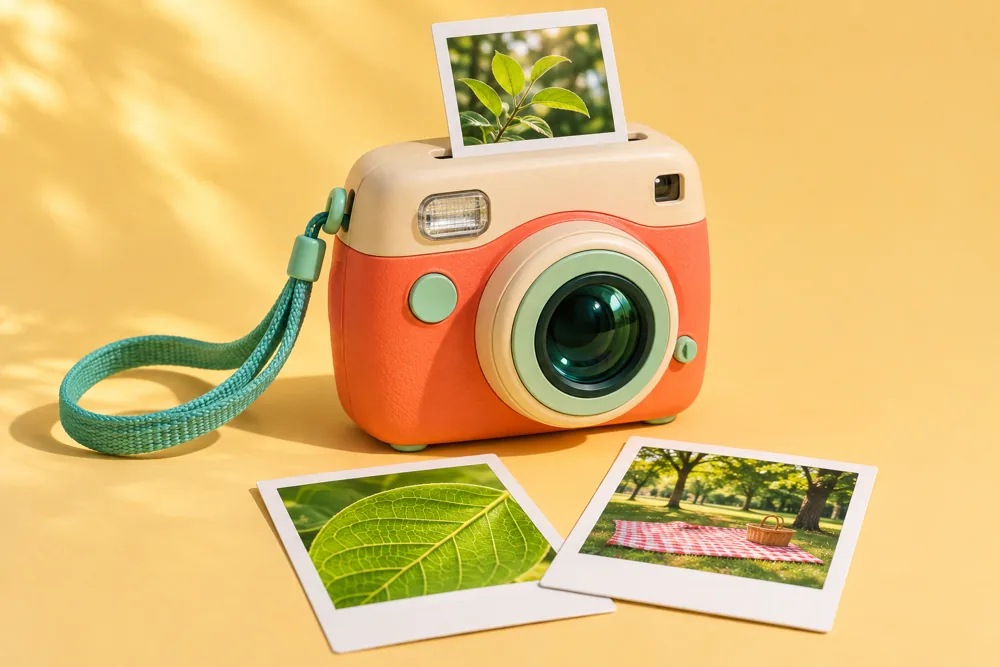

My opinion1 / 10
Good morning, everyone!
Listen first, then record your turn.
Grade 4 English Speaking
What invention would you choose, and why? Practise a one-minute talk about the camera.

Speaking practice
Listen first, then record your turn.
Homework
Page 51
Open your Activity Book to page 51. Read question 21 in your book and complete it there. You can plan your answer here first.
Page 60 · Extra practice